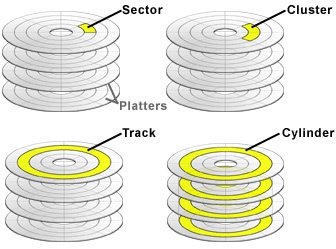
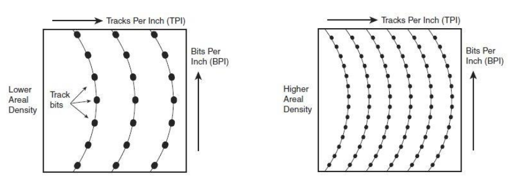
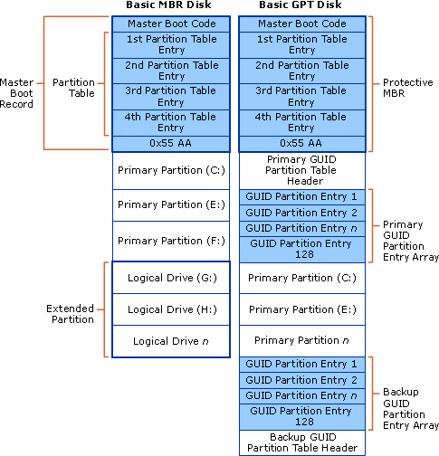

Disco duro
Un disco duro o disco rígido (en
inglés Hard Disk, HD) es un dispositivo de almacenamiento de datos no
volátil que emplea un sistema de grabación magnética para almacenar datos
digitales. Se compone de uno o más platos o discos rígidos, unidos por un mismo eje que gira a
gran velocidad dentro de una caja metálica sellada. Sobre cada plato se sitúa un cabezal de
lectura/escritura que flota sobre una delgada lámina de aire generada por la rotación de los
discos.
El primer disco duro fue inventado por IBM en 1956.
A lo largo de los años, los discos duros han disminuido su precio al mismo tiempo que han multiplicado su
capacidad, siendo la principal opción de almacenamiento secundario para PC desde su aparición en los años
60. Los discos duros han mantenido su posición dominante gracias a los constantes incrementos en la
densidad de grabación, que se ha mantenido a la par de las necesidades de almacenamiento
secundario.
Los tamaños también han variado mucho, desde los
primeros discos IBM hasta los formatos estandarizados actualmente: 3,5" los modelos para
PCs y servidores, 2,5" los modelos para dispositivos portátiles. Todos se comunican con la computadora a
través del controlador de disco, empleando un interfaz estandarizado.
Otro parámetro en constante evolución es el precio
por MB, que decrece también con el tiempo: los discos duros son cada día más rentables. El avance de los
discos duros tiene un importante impacto en el rendimiento del PC. En primer lugar, los programas
(empezando por el sistema operativo) son cada día más voluminosos y acceden a mayores cantidades de
datos. Esto exige capacidad de almacenamiento (para almacenar los programas y los datos), además de
velocidad (para agilizar el acceso a dichos datos). Por otro lado, el arranque del PC será más rápido cuanto
más veloz sea el disco duro.
Otro punto importante radica en la capacidad
multitarea de los sistemas operativos actuales. Cuando se ejecutan muchos procesos
simultáneos, es probable que no haya suficiente memoria para albergarlos a todos. Lo mismo ocurre si no
son muchos los procesos, pero consumen grandes cantidades de memoria. En esos casos, la memoria RAM no
proporciona suficiente espacio de almacenamiento, y se utiliza el disco duro como memoria virtual. Si el
disco duro no es suficientemente rápido y no dispone de mucho espacio libre, el usuario apreciará que sus
programas se ejecutan lentamente y que el sistema operativo apenas responde.
Estructura logica
La estructura lógica de un disco duro tiene las
siguientes partes.
- Pistas. La superficie del disco se divide en anillos
concéntricos denominados pistas.
- Sectores. Son subdivisiones de las pistas. Suele haber
entre 15 y 63 sectores por pista. El tamaño típico de un sector son 512 Bytes.
- Cluster. Es la cantidad de sectores que se leen conjuntamente
en una operación de lectura o escritura.
- Cilindros. Esta compuesto por todas las pistas que están en
la misma posición en las diferentes caras de cada uno de los platos. Por ejemplo, un disco con cuatro platos
tiene un cilindro de 8 pistas.

Como ejemplo, si un disco tiene 80 pistas, 18
sectores y dos caras, se obtiene que 80 pistas x 18
sectores/pista x 2
caras x 512 bytes = 1,44 MB de capacidad de almacenamiento.
El tamaño del cluster influye en el aprovechamiento
del espacio físico del disco, ya que si un archivo no llena por entero el cluster, el espacio sobretante
quedará vacio. Por ejemplo, imaginemos que tenemos un clúster de 32 KB, (El DOS y Windows 95 lo utilizaban por
defecto en los discos duros). Esto no tendría importancia si no fuera porque un clúster, como ya hemos
dicho, es la mínima unidad de lectura o escritura, a nivel lógico, del disco. Es decir, cuando grabamos
un archivo, por ejemplo de 10 Kb, estamos empleando un clúster completo, lo que significa que se
desperdician 22 Kb de ese clúster. Imaginaos ahora que grabamos 100 ficheros de 10 Kb; perderíamos 100x22
Kb, más de 2 Megas.
En el campo del almacenamiento en disco, un factor
muy importante es la densidad superficial. Ésta mide lo concentrada que se halla la
información en el disco. Por ello, si se comparan discos de igual tamaño, a mayor densidad superficial,
mayor capacidad de almacenamiento. La densidad superficial se calcula como el producto de otras dos
densidades: la densidad de pistas y la densidad lineal.
La densidad de pistas indica
la cantidad de pistas que existen por unidad de longitud, es decir lo “apretadas” que están las
pistas. En esta definición, la longitud se mide en sentido radial, desde el centro del disco, y las
unidades son pistas por pulgada (PPI) o tracks per inch (TPI).
La densidad lineal, informa sobre
lo comprimida que se halla la información dentro de las pistas (es decir, lo “apretados” que están los
bits en cada pista) que se mide en bits por pulgada (BPP) o bits per inch
(BPI).

Finalmente, la estructura de mayor nivel son las
particiones o volúmenes, que no son más que grupos de cilindros contiguos. El disco se
divide en varias particiones, que el sistema operativo hace ver como unidades
lógicas diferentes. Aunque se trata del mismo disco, el usuario aprecia varias letras de
unidad (en Windows), y cree estar trabajando con varios discos duros de menor tamaño. Una de las
ventajas de las particiones consiste en que los cabezales se deberán mover dentro de un grupo conexo de
cilindros de menor tamaño, y por tanto deberán realizar menor recorrido para encontrar el
cilindro deseado en cada acceso. Esto se traduce en una mayor velocidad de acceso a la
información.
Formateo
El proceso de formateo prepara un disco para que la información pueda
ser almacenada y leída. Podemos distinguir entre formato físico (a bajo nivel) y formateo lógico (de
alto nivel).
El formateo físico crea en el dispositivo la estructura de
pistas y sectores. Un disco que no esté formateado físicamente no puede ser usado, ya que no tiene creada
la estructura de pistas y sectores necesarios para almacenar información. Normalmente los
dispositivos ya vienen formateados físicamente de fábrica.
En linux se podemos hacer una formateo fisico facilmente mediante el
comandos: dd if=/dev/zero of=/dev/hda
El formateo lógico permite instalar un sistema de archivos en el
dispositivo. Normalmente los dispositivos también vienen formateados lógicamente de fábrica, y solemos
realizar un nuevo formateo lógico simplemente para eliminar la información del dispositivo. Cuando en un
SO realizamos la operación de formateo, siempre estaremos realizando un formateo lógico, para realizar un
formateo físico se necesitan herramientas especiales, y es un procedimiento que normalmente no debe
llevar a cabo el usuario. En realidad, cuando formateamos un dispositivo no borramos la información
almacenada en el volumen de datos, sino que simplemente eliminamos las entradas de directorio de los
ficheros, que es donde quedan asignados los clústeres a los ficheros, indicando que todos los clústeres
están disponibles.
En linux, dependiendo del sistema de archivos que queramos usar, podemos
formatear fácilmente mediante los siguientes comandos:
- para fat: mkfs.vfat /dev/sda
- para ntfs: mkfs.ntfs /dev/sda
- para ext4 mkfs.ext4 /dev/sda
MBR
Registro de arranque principal, conocido también
como registro de arranque maestro (por su nombre en
inglés master boot record, MBR) es el
primer sector de un dispositivo de almacenamiento de datos, como
un disco duro. La tabla de
particiones está alojada a partir del byte 446 y
ocupa 64 bytes, conteniendo cuatro registros de 16 bytes, los cuales definen las particiones
primarias. En ellos se almacena toda la información básica sobre la partición: si es arrancable, si no lo es,
el formato, el tamaño y el sector de inicio.
El sistema MBR solo permite 4 particiones por disco y para cada una de ellas
almacena:
- Una indicación de si la partición es arrancable, es decir, si contiene un
sistema operativo.
- El CHS ( cylinder-head-sector) de inicio y de fin de la
partición.
- El tamaño en sectores.
- El tipo de partición ( FAT16, FAT32, NTFS, etc)
Existen 3 tipos diferentes de particiones:
- Partición primaria: Son
las divisiones crudas o primarias del disco, solo puede haber 4 de
éstas o 3 primarias y una extendida.
- Partición extendida: También conocida
como partición secundaria es otro tipo de partición que actúa como una partición primaria; sirve para
contener múltiples unidades lógicas en su interior. Fue ideada para romper la limitación de 4 particiones
primarias en un solo disco físico. Solo puede existir una partición de este tipo por disco, y solo sirve
para contener particiones lógicas. Por lo tanto, es el único tipo de partición que no soporta un sistema
de archivos directamente.
- Partición lógica: Ocupa
una porción de la partición extendida o la totalidad de la
misma, la cual se ha formateado con un tipo específico de sistema de archivos (FAT32, NTFS, ext2,...) y se
le ha asignado una unidad, así el sistema operativo reconoce las particiones lógicas o su sistema de
archivos. Puede haber un máximo de 23 particiones lógicas en una partición extendida.
Las limitaciones de MBR son las siguientes:
- Solo 4 particiones primarias posibles. ( Aunque puede tener mas particiones extendidas.)
- Cada partición como mucho puede ser de 2TB.
- La información sobre las particiones lógicas de la unidad de almacenamiento se almacena en un único sitio
y si se corrompe el disco puede quedar irrecuperable.
GPT
GPT, acrónimo de GUID Partition Table,
es el nuevo estándar que está sustituyendo a MBR y que está asociado con los nuevos sistemas UEFI. Su nombre
viene de que a cada partición se le asocia un único identificador global (GUID), un identificador aleatorio
tan largo que cada partición en el mundo podría tener su ID único. A día de hoy, GPT no tiene ningún límite
más allá que los que establezcan los propios sistemas operativos, tanto en tamaño como en número de
particiones.
La fiabilidad de los discos GPT es mucho mayor que
la de MBR. Mientas que en esta segunda la tabla de particiones se almacena solo en los primeros sectores del
disco, estando en problemas en caso de que se esta se pierde, corrompe o sobrescribe, GPT crea múltiples
copias redundantes a lo largo de todo el disco de manera que, en caso de fallo, problema o error, la tabla
de particiones se recupera automáticamente desde cualquiera de dichas copias.
Mientras que el MBR comienza con el código de arranque maestro (Master
Boot Code), que contienen un binario ejecutable que identifica la partición activa e inicia el
proceso de arranque, la GPT se basa en las capacidades extendidas del EFI para estos procesos. A
pesar de que una entrada de MBR comienza el disco, con propósitos de protectividad y compatibilidad con el
viejo esquema BIOS PC, la GPT propiamente dicha comienza con la cabecera de la tabla de particiones.
